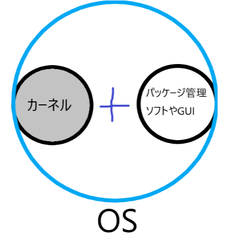
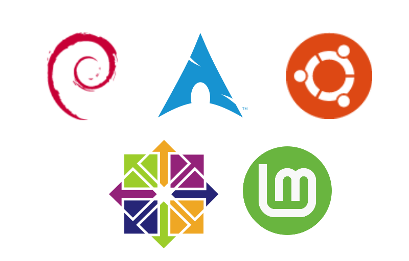

まず「Linuxとは？」です。Linuxはリーナス・トーバルズ(Linus Torvalds)さんが大学院生だった時にリナックスの中身のカーネルを作りはじめオープンソースのOSとして誕生しました。
カーネルは本体なのでほかのシェル環境やパッケージ管理ソフトなどがセットになったのが上にある画像のubuntuやarchLinuxといったものです。リーナスさんが作ったのは中心核ということです。
Linuxにはいくつかの種類があって主にDebian系とRedhat系Arch系があります。(ほかにもありますが3つが一番有名です)

とてもユーザーが多くおすすめもされる。Linuxと言ったらこれ！Ubuntu派生のディストリビューションも多い。
SBCのraspberrypi用の教育用OSです。標準ソフトも豊富でわかりやすいインターフェイス
Ubuntu派生のLinuxで人気のディストリビューション。
ハッキングやセキュリティー診断(侵入テスト)ソフトが豊富なハッカー愛用OS。法律に気を付けて使おう。
MX linuxは高速で低リソースで洗練されたデザインで軽量のOS。様々なハードウェアに対応しており安定している。
Linuxの有償部分を取り除いたOSです。ほとんど差はありません。2021年をもって開発・サポートが終了しています。
高い互換性を持つ無料ディストリビューション
ArchLinuxの難しいインストールをGUIで簡単にしたディストリビューションです。初心者にも使いやすいです。
KaliLinuxと同じくセキュリティー診断ソフトが豊富です。法律に気を付けて使いましょう。
PCゲームの販売などを行っているサービス。Valve Corporetionが開発したゲーム用OS。ゲーム重視のユーザー向け。